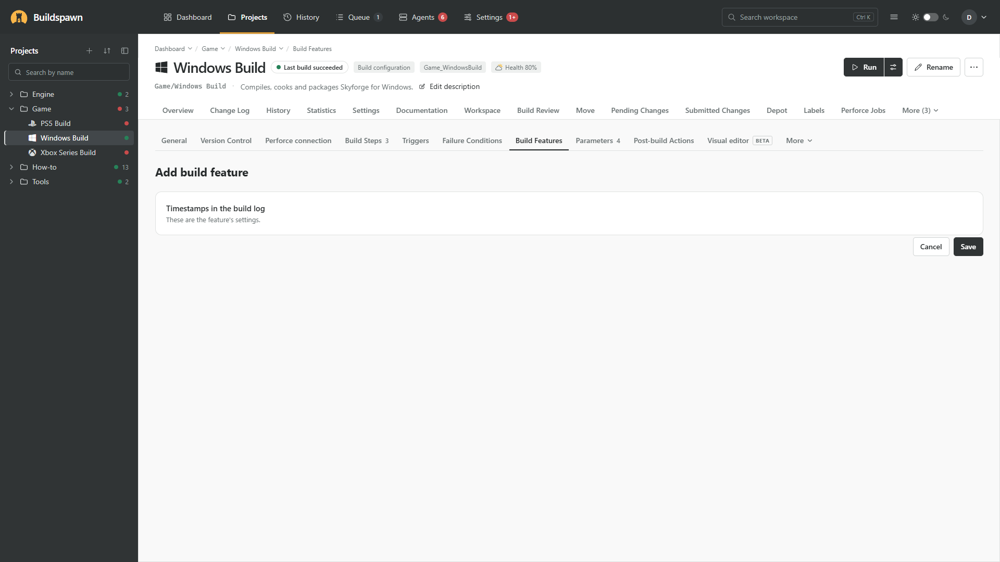

Timestamps in the build log
Puts the time, as HH:mm:ss, in front of every line of the console output.
In the list of build features this is called Add timestamps to the Console Output.
When to use it
Turn it on when you need to see where a build spends its time. A game build can run for an hour. With times in the log you can see that the cook took 22 minutes and the shader compile took 9. It has no settings and costs almost nothing.

How to set it up
- Open the build configuration, click Settings, then Build Features. Click Add build feature and choose Timestamps in the build log.
- There is nothing to fill in. Click Save.
- Make sure the On switch of the feature is on.
Every field
| Field | What it does | Default | Example |
|---|---|---|---|
| (no fields) | The feature only has an on and off switch. | Off | - |
A worked example
The Windows Build configuration of the Skyforge game takes 48 minutes and nobody knows why. The team adds Timestamps in the build log. The next build shows that the step Cook content starts at 00:07:12 and ends at 00:31:40.
What you see when it runs
Every line of the console log starts with the time:
12:04:31 Started by user dana.k 12:04:33 Running as agent WIN-BUILD-02 12:04:40 Cook content: start 12:29:02 Cook content: done
Problems and fixes
| Problem | What to do |
|---|---|
| No times show in the log | Check that the On switch of the feature is on. The times only show for builds that start after you save. |
| The feature is not in the list | The build configuration type cannot hold build features. A Pipeline does this in its script. |